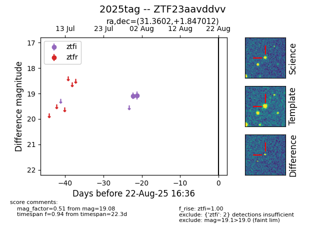

Target 2025tag at 2025-08-22 16:36, see:
FINK: fink-portal.org/ZTF23aavddvv
Lasair: lasair-ztf.lsst.ac.uk/objects/ZTF23aavddvv
ALeRCE: alerce.online/object/ZTF23aavddvv
TNS: wis-tns.org/object/2025tag
YSE: ziggy.ucolick.org/yse/transient_detail/2025tag
alt names
ZTF23aavddvv (ztf,alerce)
2025tag (tns,yse)
coordinates:
equatorial (ra, dec) = (31.3602,+1.84701)
galactic (l, b) = (157.4656,-55.98160)
photometry
last ztfi=19.08
2 ztfi detections
